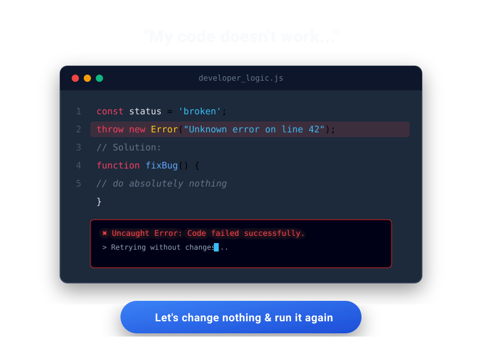

Following content is for testing Markdown-to-HTML generator with various Markdown settings including standard syntax and extended Markdown Extensions. To setup Markdown settings in Pelican, please check this article: Setup blog with Pelican.
You should know about HTML, CSS and probably Markdown
Markdown Settings
Here are the list of Markdown extensions will be used to generate this article.
MARKDOWN = {
'extensions': [
# official extensions
'markdown.extensions.extra', # include extensions: abbr, attr_list, def_list, fenced_code, footnotes, tables
'markdown.extensions.codehilite', # to generate code color scheme using pygments
'markdown.extensions.meta', # to parse key:value pairs at the begining of file
'markdown.extensions.sane_lists',# for better list
'markdown.extensions.toc', # add Table of Content
'markdown.extensions.nl2br', # easily to add new line, but make attr_list and legacy_attrs hard to control
#'markdown.extensions.legacy_attrs', # insert attribs into element, but markdown already has a built-in function that do the same thing
#'markdown.extensions.legacy_em', # to use legacy emphasis
#'markdown.extensions.smarty', # converts ASCII dashes, quotes and ellipses to their HTML entity equivalents
#'markdown.extensions.wikilinks',
# 3rd party extensions
'markdown_checklist.extension', # show checkbox in list
#'markdown_captions', # convert <img> to <figure> and <figcaption>
],
'extension_configs': {
'markdown.extensions.codehilite': {'css_class': 'highlight'},
},
'output_format': 'html5',
}
Paragraphs
Emphasis a word or a phrase: *italic* or **bold** or ***bold and italic*** or `in-line code`.
Show input keys: <kbd>Ctrl</kbd> <kbd>Alt</kbd> <kbd>Del</kbd>.
Emphasis a word or a phrase: italic or bold or bold and italic or in-line code.
Show input keys: Ctrl Alt Del.
As mentioned in how to comments in markdown you can (ab)use the link labels syntax to write your comments.
Those lines will not be processed, so they are not included in rendered page nor page’s source code.
[//]: # (This may be the most platform independent comment)
Markdown in HTML tags
By default, text in HTML tags is not rendered. To support Markdown syntax in HTML tags, add markdown="1" into the tag.
<div markdown="0">
This text is not **rendered**.
</div>
<div markdown="1">
This text is **rendered** well.
</div>
This text is rendered well.
Attribute Lists
Official extension
Element can have some attributes by using markdown.extensions.attr_list extension.
This provides syntax: {: #someid .someclass somekey='some value' } to add attributes to a block or a span element.
To use with a block element, the attribute list should be defined on the last line of the block.
To use with a span element, the attribute list should be placd right after the generated span without space.
A paragraph with dark background and light text, using `attr_list` extension. *Attribute list can be applied to a span element*{: .text-warning} if the attribute list is added right after the span without any space.{: .bg-dark .text-light .p-1}
A paragraph with dark background and light text, using attr_list extension. Attribute list can be applied to a span element} if the attribute list is added right after the span without any space.{: .bg-dark .text-light .p-1
Build-in parser
Some Markdown version already has a built-in parser to process attribute lists. For example in Markdown 3.1.1, below code generate the same HTML block.
Use built-in parser
{id="icon" class="icon mx-auto" style="display:block"}
Use attr_list extension
{: #icon .icon .mx-auto style=display:block}
This is a sample sentence in green.
{class="text-success text-center"}
This is a sample sentence in green.
Deprecated extenstion
Another extension that also adds attribute into block or element is markdown.extensions.legacy_attrs. This extension has been deprecated in favor of Attribute Lists.
Attributes are defined by including the syntax {@key=value} within the element.
{@class=bg-dark text-warning p-1}A paragraph with dark background and yellow text, using `legacy_attrs` extension.
_This text won't be formatter_, but __this text will be formatted__ by the latter directive at the end of this block{@class=text-success}
if nl2br extenstion is disabled, it will be more readable as below
{@class=bg-dark text-warning p-1}
A paragraph with dark background and yellow text, using `legacy_attrs` extension.
_This text won't be formatter_, but __this text will be formatted__ by the latter directive at the end of this block{@class=text-success}
Blockquote
Using default directive > with legacy_attrs or attr_list to get better result.
> I do love you so much!
> _Henry_
I do love you so much!
Henry
> I do love you so much!
> _Henry_{class=blockquote-footer}
or
> I do love you so much!
> _Henry_{: .blockquote-footer}
I do love you so much!
HenryI do love you so much!
Henry
Images
Using <img> tag is enough to show image. Some people use markdown_captions extension to convert <img> to <figure> and <figcaption> which are new in HTML5.
Adding <figure> and <figcaption> manually can be done by using Markdown in HTML tags, but it doesn’t look good in markdown file.
<figure markdown="1">
<figcaption class="img-caption">_my code doesn't work © [nerd4life.studio](https://nerd4life.studio/blogs/nerd4life-comic/my-code-doesnt-work)_</figcaption>
</figure>
There is another way to add caption and credit to image:
_my code doesn't work © [nerd4life.studio](https://nerd4life.studio/blogs/nerd4life-comic/my-code-doesnt-work)_{: .img-caption}
.img-caption {
display: block;
color: #6c757d!important;
text-align: center!important;
font-size: 80%;
font-weight: 400;
}

my code doesn’t work © Dev JokesStandard Codeblock
Using Standard Codeblock with correct indent, code can be shown as below type of paragraph
Show line number
use Shebang #! instead of ::: to render line number.
#!python hl_lines="1 3"
# This line is emphasized
# This line isn't
# This line is emphasized too
will be:
1 2 3 | |
In paragraph
:::python hl_lines="1 3"
# This line is emphasized
# This line isn't
# This line is emphasized too
will be:
# This line is emphasized
# This line isn't
# This line is emphasized too
In nested list item
- First item
:::python hl_lines="1 3"
# This line is emphasized
# This line isn't
# This line is emphasized too
- Second item
- Third item
will be:
-
First item
# This line is emphasized # This line isn't # This line is emphasized too -
Second item
- Third item
In blockquote
> This snippet of code
>
#!python
from __future__ import me
me.teleportTo(now)
will be:
This snippet of code
from __future__ import me me.teleportTo(now)
Fenced Codeblock
Using Fenced Codeblock allow the color highlight scheme to show in Markdown editor,
but this won’t support to show codeblock in list item or blockquote, and won’t show line number.
````python hl_lines="2"
# You can highlight a line by adding hl_lines="2"
# so this line will be highlighted
````
will be:
# You can highlight a line by adding hl_lines="2"
# so this line will be highlighted
To add line number, a small vanilla JS snippet will be used to generate texts and few CSS styles will be used to format them
document.querySelectorAll('pre').forEach(function (pre) {
pre.innerHTML = '<span class="line-number"></span>' + pre.innerHTML + '<span class="cl"></span>';
var num = pre.innerHTML.split(/\n/).length;
var lineNum = pre.getElementsByTagName('span')[0];
for (var j = 0; j < num - 1; j++) {
lineNum.innerHTML += '<span>' + (j + 1) + '</span>';
}
});
pre .line-number {
display: block;
float: left;
margin: 0 1em 0 -1em;
border-right: 1px solid #ddd;
text-align: right;
}
pre .line-number span {
display: block;
padding: 0 .5em 0 1em;
color: #ccc;
}
pre .cl {
display: block;
clear: both;
}
Table
Table with alignment and format text inside.
There’s no way to add a class directly to a <table> tag from Markdown, so Simplify-Next does it for you: static/style.js walks every rendered table and adds the Bootstrap 5 classes automatically, in plain JavaScript (no jQuery):
document.querySelectorAll('table:not(.highlighttable)').forEach(function (table) {
table.classList.add('table', 'table-hover', 'table-sm', 'table-bordered');
});
document.querySelectorAll('thead').forEach(function (thead) {
thead.classList.add('table-light'); // Bootstrap 5 renamed `.thead-light` to `.table-light`
});
Define a table
| Level | Description | Default |
| :--- | :--- | ---: |
| Debug | All information | _Off_{: .badge .text-bg-danger} |
| Info {: .text-info} | Useful infomation | _Off_{: .badge .text-bg-danger} |
| Warning {: .text-warning} | **Error, but system still runs** | _On_{: .badge .text-bg-success} |
| Error {: .text-danger} | ***Critical error, system halted*** | _On_{: .badge .text-bg-success} |
will get it rendered as:
| Level | Description | Default |
|---|---|---|
| Debug | All information | Off |
| Info | Useful infomation | Off |
| Warning | Error, but system still runs | On |
| Error | Critical error, system halted | On |
Sane List
Lists will not mixed thanks to markdown.extensions.sane_lists extension.
Use legacy_attrs or attr_list to format list items.
1. First item
{: .text-primary}
2. Second item
{class=text-success}
- a new list
{: .text-primary}
- not mixed
{style=color:red}
- First item
- Second item
- a new list
- not mixed
Dictionary
A definition list can be render using markdown.extensions.def_list extension.
Apple
: Pomaceous fruit of plants of the genus Malus in the family Rosaceae.
Orange
: The fruit of an evergreen tree of the genus Citrus.
- Apple
- Pomaceous fruit of plants of the genus Malus in the family Rosaceae.
- Orange
- The fruit of an evergreen tree of the genus Citrus.
Footnotes
Footnotes1 have a label2 and the footnote’s content.
New-Line-to-Break
Add markdown.extensions.nl2br into your Markdown extension settings.
This causes newlines to be treated as hard breaks, like StackOverflow and GitHub flavored Markdown do.
If this extension is not used, these 3 lines will become one line in HTML.
Checklist
To show a list with checkbox, install markdown_checklist extension and enable it in Markdown extensions list.
The list item indicators still show, so add some CSS style to hide them.
ul.checklist {
list-style-type: none;
padding-left: inherit;
}
Finally, a task list looks like below:
- [ ] foo
- [x] bar
- [ ] baz
- foo
- bar
- baz
Read more: